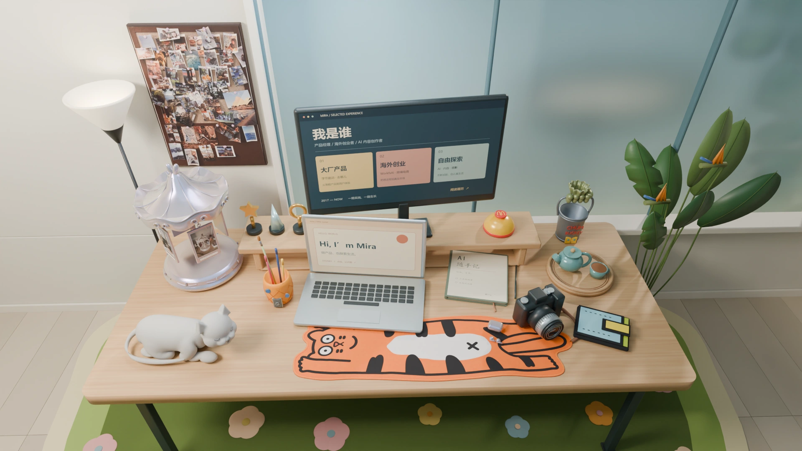

AMERICAN SHORTHAIR / MOTION STUDY 01
嘘，轻轻摸一下。
它会醒一醒，伸个懒腰，再慢慢窝回去。

素色模型 · 暂无花纹与毛发贴图窝着休息0.0 / 7.3 秒
01 窝着02 起身03 塌腰伸展04 慢慢趴回
这一轮先看圆脸、短耳、体型和动作。后面再按真实照片调整花色、纹路与毛感。移到猫身上轻轻划过，或点击“摸摸它”即可；可以拖动进度条检查每个姿势。
动作暂时没有加载成功，请刷新后再试。静态模型仍可查看。
AMERICAN SHORTHAIR / MOTION STUDY 01
它会醒一醒，伸个懒腰，再慢慢窝回去。

素色模型 · 暂无花纹与毛发贴图窝着休息这一轮先看圆脸、短耳、体型和动作。后面再按真实照片调整花色、纹路与毛感。移到猫身上轻轻划过，或点击“摸摸它”即可；可以拖动进度条检查每个姿势。
动作暂时没有加载成功，请刷新后再试。静态模型仍可查看。